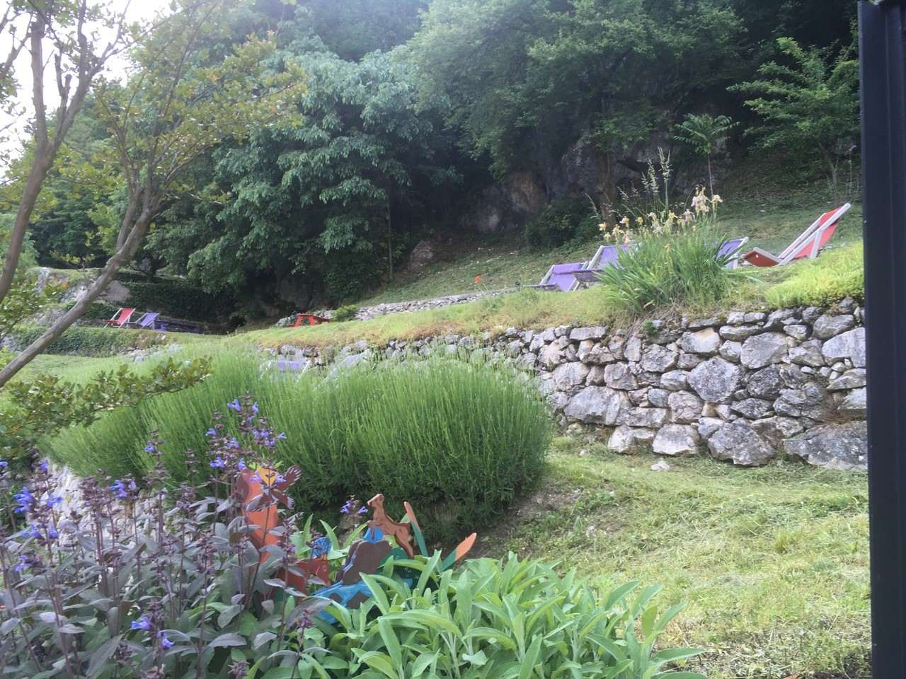
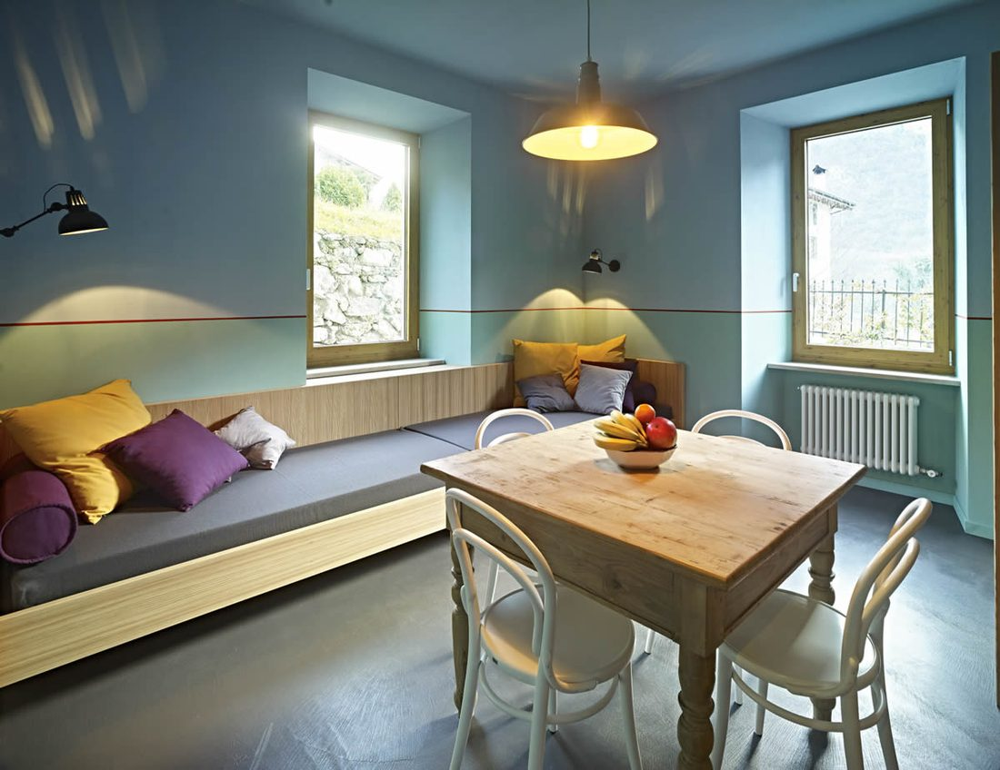
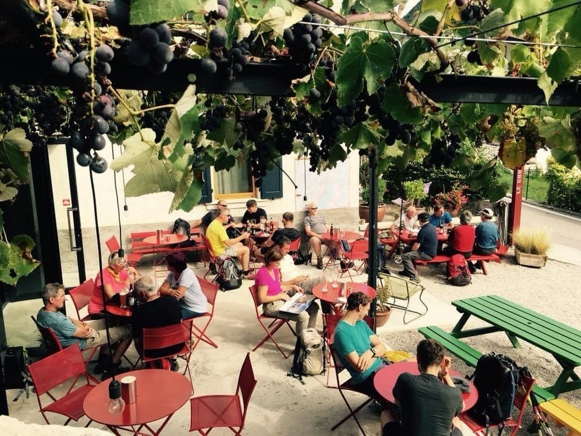
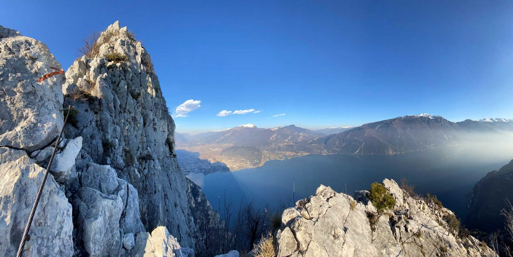

Biacesa, Valle di LedroVilla Alma Le Grotte
Tre appartamenti in una villa storica, il giardino con le sue grotte e il Cafè Le Grotte. Lontano dalla confusione, tra il turchese del lago di Ledro e il blu del Garda.
- 3 appartamenti
- Giardino con le grotte
- Cafè e bottega
Un ritorno alla semplicità
Chi sceglie Villa Alma sceglie di allontanarsi dalla confusione e di immergersi nella tranquillità di un piccolo paese di montagna. Alcuni lo chiamano ritorno alle origini, altri lo chiamano lusso.

Gli appartamenti
Da 40 a 80 mq, da 4 a 8 persone, con il parcheggio privato.
Vedi i tre appartamenti
Cafè Le Grotte
Pranzetti, merende e aperitivi, con i prodotti di orti e fattorie locali.
Scopri il Cafè
La montagna fuori dalla porta
La ferrata di Cima Capi, i sentieri, la bici e il lago di Ledro.
Cosa fareIl giardino delle grotte
Il giardino di Villa Alma, con le sue grotte e i suoi angoli nascosti, è un luogo speciale. Per leggere un libro all'ombra degli alberi, riposare, meditare o semplicemente fermarsi: qui ognuno trova il suo rifugio.
«Qui le giornate trascorrono a un ritmo diverso: se vi lasciate andare al ritmo della natura, sarà come rinascere in un mondo più bello.»
Vi aspettiamo a Biacesa
Per un appartamento, un pranzo al Cafè o una degustazione di vini: chiamateci o scriveteci su WhatsApp.